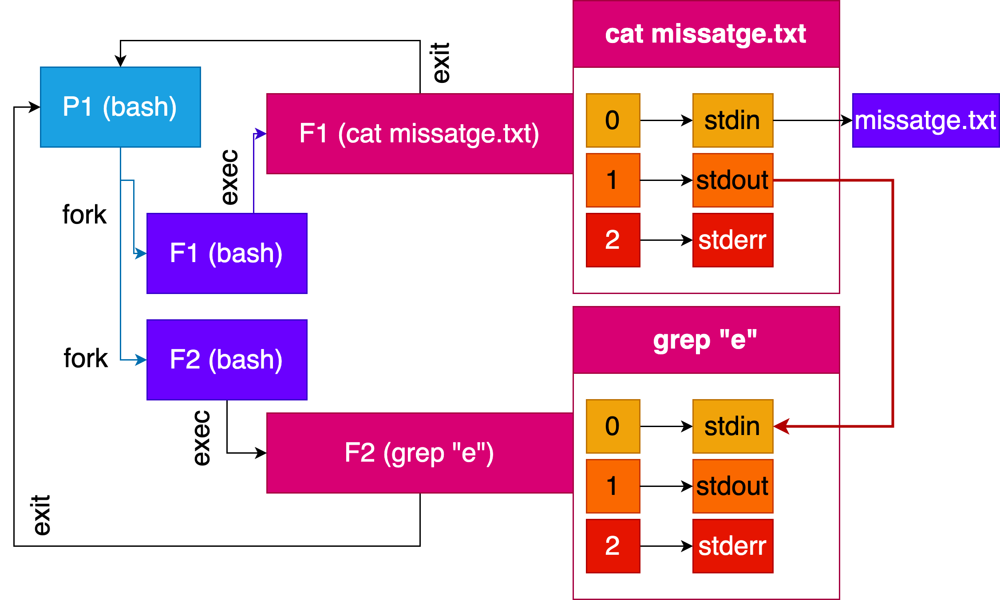
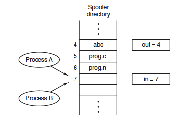

Comunicació de processos
Unitat 3 · Sistemes Operatius (SO)
Repàs de gestió de processos
echo "Missatge enviat" > missatge.txt

Exercici
Implementeu un programa en C que simuli aquest comportament.
Comunicació entre processos (IPC)
En un sistema operatiu multiprogramat o distribuït, diversos processos s’executen concurrentment i sovint necessiten intercanviar dades, sincronitzar accions o compartir recursos. Aquest intercanvi s’anomena Inter-Process Communication (IPC).
- Coordinació i sincronització entre processos independents.
- Transferència d’informació sense accedir directament a l’espai d’adreces dels altres processos.
- Compartició controlada de recursos (fitxers, memòria, dispositius, sockets).
Reptes de la comunicació (IPC)
Com es pot transferir la informació entre processos? Recorda que els processos operen en espais d’adreçes independents. Per tant, no poden accedir a la mateixa informació.
Com es pot assegurar que dos processos no intentin accedir simultàniament a la mateixa informació? Imagina’t 2 processos executant una reserva en un avió i els dos processos assignen el mateix seient a dos passatgers diferents.
Com es poden coordinar els processos dependents entre si? Imagina’t un procés que genera dades i un altre procés que les processa. El procés que processa les dades necessita esperar a que el procés que les genera les hagi generat totes.
Exemples de comunicació/sincronització
- Comunicació: Intercanvi d’informació.
- Sincronització: Coordinació en l’accés als recursos i en l’ordre d’execució de les tasques.
cat < missatge.txt | grep "e"
Esquema de la comunicació/sincronització
Exemple: Cua d’impressió
Assumeix que un proces A vol imprimir un document:
- El procés A ha d’introduir el nom del fitxer a imprimir en una cua d’impressió.
- El servei d’impressió procés B de forma periòdica revisa la cua d’impressió i imprimeix els fitxers que hi ha en la cua.
Per fer-ho, implementem una cua d’impressió amb dos variables una que apunta al següent slot a imprimir (out) i una al següent slot lliure (in).
Exemple: Cua d’impressió
- El procés A llegeix la variable in i escriu el valor 7 en una variable local (next_free_slot).
- El SO interromp el procés A i executa el procés B.
- El procés B llegeix la variable in i escriu el valor 7 en una variable local (next_free_slot).
- El procés B col·loca un fitxer a la cua d’impressió al slot 7 i el servei d’impressió modifica les variables in i out.
- El procés B realitza altres tasques no relacionades amb la cua d’impressió.
- El SO interromp el procés B i executa el procés A. El procés A utilitza la seva variable local (next_free_slot) per a escriure el fitxer a la cua d’impressió. El fitxer s’escriu al slot 7, i també actualitza les variables in i out.

- El procés B ha perdut la impressió del fitxer. El procés A l’ha sobrescrit.
- El servei d’impressió no ha notat cap inconsistencia en les variables in i out.
Condicions de carrera
Les condicions de carrera es produeixen quan dos o més processos o fils d’execució intenten accedir simultàniament a recursos compartits o a dades sense la deguda sincronització.
Problemes
Poden conduir a resultats inesperats o incorrectes en les operacions i a la inconsistència de les dades compartides.
Solucions
Exclusió Mútua: Utilitzar mecanismes com semàfors, mutex o candaus per a garantir que només un procés pugui accedir als recursos compartits a la vegada.
Sincronització: Coordinar l’execució dels processos mitjançant sincronització de manera que no interfereixin entre ells quan accedeixen als recursos compartits.
Evitar les condicions de carrera
La secció crítica és la part del codi on s’accedeix a recursos compartits. Per a evitar les condicions de carrera, els processos han de complir les següents condicions:
- Dos processos no poden estar simultàniament en la secció crítica.
- No s’ha d’assumir que els processos són executats de forma ràpida o lenta.
- Cap procés que no estigui en la secció crítica pot bloquejar altres processos.
- Cap procés ha d’esperar per sempre per entrar a la secció crítica.

Tipus de comunicació
Pas de missatges
- Permet integrar tasques de comunicació i sincronització entre processos situats en una mateixa màquina o en màquines distribuïdes.
- Un missatge és un conjunt de dades intercanviades per 2 o més processos.
Memòria compartida
- Els processos es comuniquen utilitzant variables o zones de memòria compartida.
- S’utilitzen per comunicar processos en una mateixa màquina.
- Es necessita regular l’accés a la informació compartida per garantir el resultat òptim i evitar les race conditions.
Característiques de la comunicació (I)
Identificació
- Mecanismes de noms
- Sense nom
- Nom local
- Nom de la red
- Identificador de destí
- Directe: S’ha d’indicar el procés origen i destí. El missatge s’envia a un procés concret utilitzant el seu pid. El receptor pot (indicar o no) el procés que vol rebre el missatge.
- Indirecte: Els missatges s’envien a una zona contreta (bustia o port), sense identificar de forma explícita el destí.
Característiques de la comunicació (II)
Flux de dades
- Unidireccional
- Bidireccional
Buffering
- Amb buffers
- Sense buffers
Sincronització
- Sincrons (bloquejants)
- Asíncrons (no bloquejants)
Tipus de mecanismes
- Fitxers.
- Pipes.
- FIFOS (Pipes amb nom).
- Cues de missatges.
- Sockets.
- Memòria compartida (IPC).
Fitxers
La comunicació entre processos a través dels sistemes de fitxers és una manera simple d’intercanviar informació entre ells. Això implica que dos o més processos acorden un fitxer pel seu nom i el utilitzen per a la comunicació. Un dels processos escriu al fitxer mentre que un altre processos llegeix el contingut del fitxer.
Limitacions
Persistència: Els fitxers són persistents, la informació roman en disc fins que s’elimina de forma explícita. Això no és òptim per a la comunicació efímera o temporal entre processos.
Problemes de Sincronització: Cal gestionar la sincronització de forma manual per garantir que un procés no llegeixi el fitxer abans que un altre procés hagi acabat d’escriure-hi. Aquesta sincronització pot ser complexa i pot conduir a errors si no es gestiona adequadament.
Eficiència: L’ús de fitxers per a la comunicació no és eficient en termes de rendiment, ja que involucra operacions d’entrada i sortida a disc, que són més lentes que altres mètodes de comunicació en memòria.
Exemple: Comunicació amb fitxers
Un procés 1 (escriptor) escriu un missatge en un fitxer anomenat fitxer_comunicacio.txt.
Un procés 2 (lector) llegeix el missatge d’aquest fitxer i el mostra per pantalla.
Pipes
Els pipes són dispositius lògics dissenyats per permetre la comunicació entre processos. Es comporten com una cua de caràcters amb una longitud fixa on els processos poden llegir o escriure.
- Sense Nom: Els pipes són anònims, el que significa que no estan associats amb un fitxer del sistema de fitxers.
- Ús Amb fork(): Es poden heretar i utilitzar fàcilment.
- Identificació: Es caracteritzen per tenir dos descriptors de fitxers, un per a l’escriptura i un altre per a la lectura.
- Flux de Dades Unidireccional: El flux de dades als pipes és unidireccional, la informació només es mou d’una direcció, és a dir, del procés escriptor al procés lector.
- Amb Buffering: Els pipes utilitzen un mecanisme que permet acumular dades fins que es llegeixin.
- Restriccions d’Àmbit Local: Comunicació entre processos a la mateixa màquina, ja que no estan dissenyats per a la comunicació a través de xarxes.
Exemple: Comunicació amb Pipes (Bash)
En bash, podem utilitzar pipes per a comunicar dos processos. Per exemple, podem utilitzar el comandament echo per a enviar un missatge a través d’un pipe i el comandament cat per a llegir aquest missatge.
Exemple: Comunicació amb pipes (C)
int pipe_fd[2];
pipe(pipe_fd);
if (fork() == 0) { // Fill (lector)
close(pipe_fd[1]);
char buffer[100];
read(pipe_fd[0], buffer, 100);
close(pipe_fd[0]);
printf("Missatge rebut: %s\n", buffer);
} else { // Pare (escriptor)
close(pipe_fd[0]);
write(pipe_fd[1],
"Missatge des de Process pare",
strlen("Missatge des de Process pare")
);
close(pipe_fd[1]);
}FIFOS
- Funcionen com els pipes, però amb un mecanisme de comunicació amb nom.
- Serveis:
mkfifo(char *name,mode_t mode);open(char *name, int flag);- S’obre un FIFO per r,w, r+w
- Acció bloquejant fins que algun procés estigui a l’altre extrem.
- Lectura i escriptura (read(), write()).
- Tancament amb close().
- Eliminació amb unlink().
Els FIFOs ofereixen una forma de comunicació més flexible entre processos amb l’avantatge afegit de poder ser utilitzats per processos que no comparteixen un antecessor comú.
Exemple: Comunicació amb FIFOS (Bash)
- Crear el FIFO en la terminal 1:
- Executarem el process 1 (escriptor) a la terminal 1:
- Executarem el process 2 (lector) a la terminal 2:
- Eliminarem el FIFO:
Exemple: Comunicació amb FIFOS (C)
mkfifo("fifo_example", 0666);
// Process 1 (escriptor)
int fd = open("fifo_example", O_WRONLY);
write(fd, "Missatge des de Process 1", strlen("Missatge des de Process 1"));
close(fd);
// Process 2 (lector)
int fd = open("fifo_example", O_RDONLY);
char buffer[100];
read(fd, buffer, 100);
close(fd);
printf("Missatge rebut: %s\n", buffer);
unlink("fifo_example");Cua de missatges
- Comunicació mitjançant pas de missatge de la llibreria IPC.
- Mateixa màquina.
- Identificació: indirecta amb identificador especial idCua.
- Amb nom local.
- Amb buffering.
- Unidireccional.
- Sincronització: bloquejant i no bloquejant.
Operacions bàsiques:
int msgsnd(int msqid, const void *msgp, size_t msgsz, int msgflg): Envia un missatge msgp de mida msgz a la cua msgid.ssize_t msgrcv(int msqid,void *msgp, size_t msgsz,long msgtyp,int msgflg): Rep un missatge de la cua msgid i el guarda a msgp.
Ex: Comunicació amb Cua de missatges (C) - Escriptor
struct message {
long msg_type;
char msg_text[100];
};
int main() {
key_t key = ftok("msg_queue_example", 65);
int msqid = msgget(key, 0666 | IPC_CREAT);
struct message msg;
msg.msg_type = 1;
strcpy(msg.msg_text, "Aquest és un missatge de prova!");
msgsnd(msqid, &msg, sizeof(msg), 0);
printf("Missatge enviat: %s\n", msg.msg_text);
return 0;
}Ex: Comunicació amb Cua de missatges (C) - Lector
Sockets
Els sockets són eines fonamentals per a la comunicació entre processos a través d’una xarxa o dins del mateix ordinador. Poden utilitzar-se per a la comunicació mitjançant diferents protocols com TCP/IP o UDP.
Comunicació a través de la xarxa o local: Els sockets permeten la comunicació entre processos que poden estar en el mateix ordinador o en diferents ordinadors a través de la xarxa.
Adreces: Els sockets estan identificats per adreces, com les adreces IP per a la comunicació a través de xarxes o adreces locals per a comunicació dins del mateix ordinador.
Protocols: Els sockets poden utilitzar diferents protocols com TCP/IP o UDP, segons les necessitats de la comunicació.
Exemple: Comunicació amb Sockets

Ex: Comunicació amb Sockets (C)
Servidor
int sockfd, new_sock;
struct sockaddr_in server_addr;
struct sockaddr_in new_addr;
socklen_t addr_size;
char buffer[100];
sockfd=socket(AF_INET, SOCK_STREAM, 0);
// Configuració de la connexió...
// Esperar connexions i llegir
new_sock = accept(sockfd,
(struct sockaddr*)&new_addr,
&addr_size);
recv(new_sock, buffer, 100, 0);
printf("Missatge rebut: %s\n", buffer);Memòria compartida
La comunicació mitjançant memòria compartida implica compartir una àrea de memòria entre diferents processos o fils d’execució d’un mateix procés. Aquest àrea de memòria és accessible per a tots els fils d’execució involucrats, permetent un accés directe i eficient a les dades compartides.
- Espai d’adreçament únic: Fils d’execució d’un procés.
- Múltiples espai d’adreces: Zones de Memòria que són accessibles per processos diferents.
- S’ha de controlar/sincronitzar l’accés a les dades compartides per assegurar la consistència de les dades amb mecanismes com semàfors, mutex o candaus.
Ex: Comunicació amb Memòria Compartida (C)
key_t key = ftok("fitxer_clau", 'R');
int shmid = shmget(key, 1024, 0666 | IPC_CREAT);
char *shared_memory = (char *)shmat(shmid, (void *)0, 0);
// Escriure dades a la memòria compartida
strcpy(shared_memory, "Missatge a la memòria compartida");
// Llegir dades de la memòria compartida
printf("Missatge llegit: %s\n", shared_memory);
// Alliberar memòria compartida
shmdt((void *)shared_memory);
shmctl(shmid, IPC_RMID, NULL);Llibreries de Memòria compartida
pthread (POSIX Threads): És una interfície estàndard que facilita la creació i gestió de fils d’execució (threads) en C. Permet als processos tenir múltiples fils d’execució que comparteixen memòria i recursos.
OpenMP: És una API que facilita la programació paral·lela. Permet als desenvolupadors marcar parts del codi com a regions paral·leles, que s’executaran de forma concurrent en diferents fils d’execució.
Comparació/Selecció de mecanismes de comunicació
- Fitxers: Comunicació temporal de dades. No recomanat.
- Pipes: Comunicació unidireccional entre processos amb un antecessor comú.
- FIFOS: Comunicació unidireccional entre processos amb un antecessor comú.
- Cues de missatges: Quan es necessita enviar missatges amb sincronització asíncrona i buffering.
- Sockets: Comunicació a través de la xarxa o local.
- Memòria compartida: Quan es necessita accedir ràpidament a dades compartides entre processos.
Això és tot per avui
TAKE HOME MESSAGE
La comunicació entre processos és essencial per a la coordinació i sincronització en sistemes operatius multiprogramats o distribuïts. Hi ha diversos mecanismes de comunicació, cadascun amb les seves pròpies característiques, avantatges i limitacions. La selecció del mecanisme adequat depèn de les necessitats específiques de l’aplicació, com la velocitat, la complexitat i l’escala de la comunicació requerida.


Unitat 3 · Sistemes Operatius (SO) 🏠